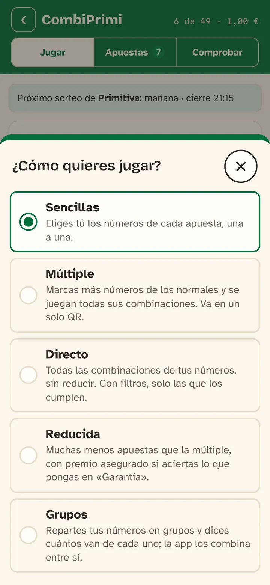
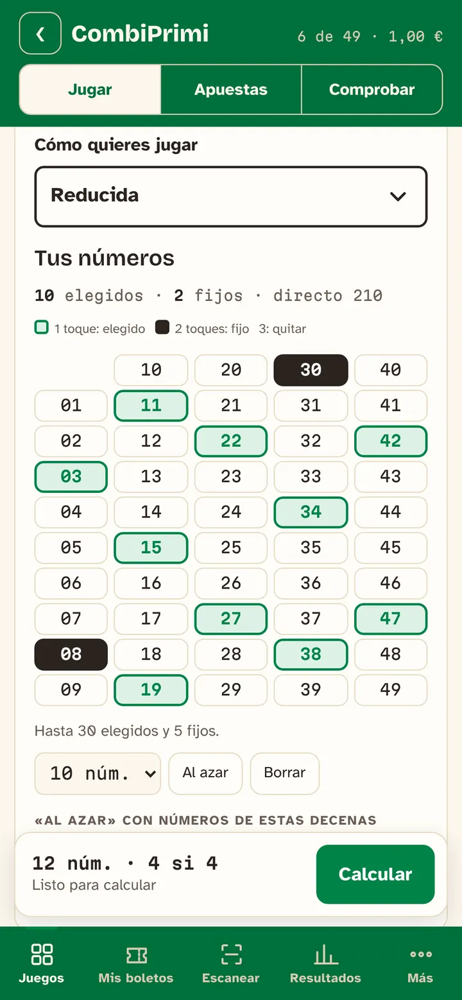
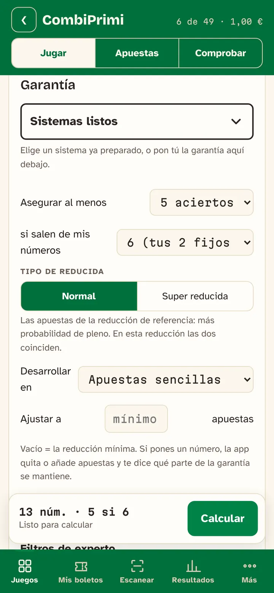
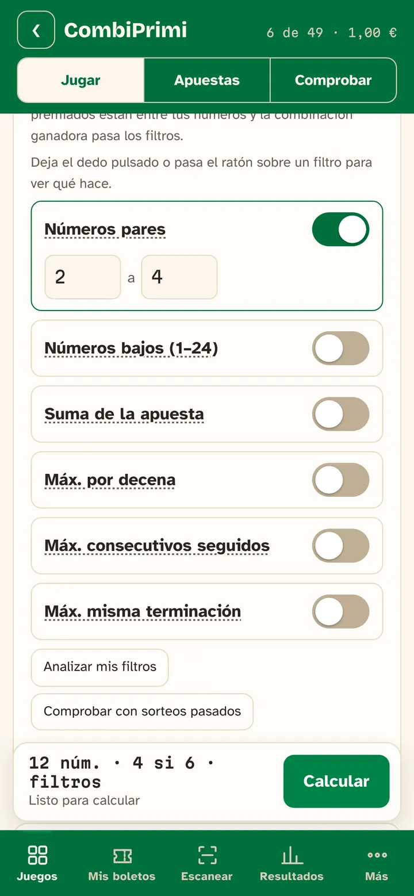
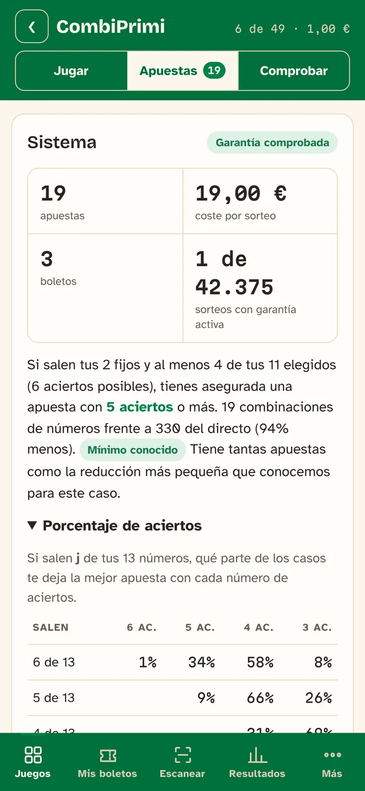
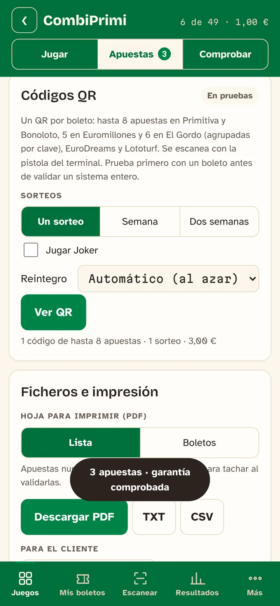
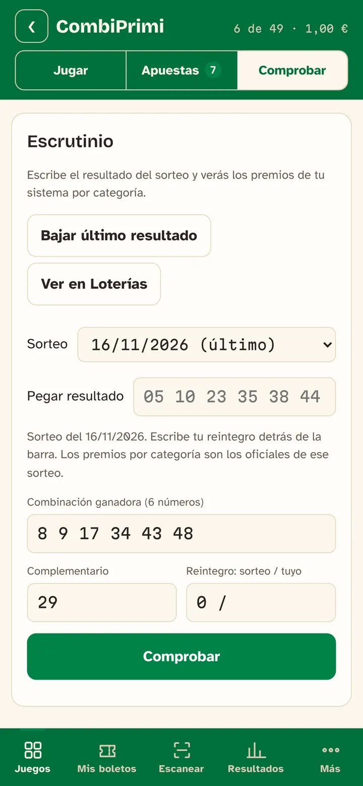

La Primitiva
App independiente. Combinario no es oficial ni tiene relación con Loterías y Apuestas del Estado (SELAE). No vende apuestas: solo te ayuda a prepararlas, y se validan y se pagan en un punto de venta. Solo para mayores de 18 años.
En la app se llama CombiPrimi. Eliges 6 números del 1 al 49. Lo que se explica aquí (formas de jugar, garantía, fijos y filtros) vale también para Bonoloto, Euromillones, El Gordo, EuroDreams y Lototurf.
Las tres pestañas del juego
- Jugar: marcas tus números y eliges cómo jugar.
- Apuestas: ves las apuestas que salen, lo que cuestan y cómo llevarlas al punto de venta.
- Comprobar: miras si tus apuestas han tenido premio en un sorteo.
Arriba del todo, una barra te dice cuándo es el próximo sorteo y a qué hora cierra la venta (la hora oficial de Loterías para ese sorteo).
Cómo quieres jugar
Toca el botón grande «Cómo quieres jugar». Sube una lista con las formas de jugar, cada una con una frase que la explica. Toca la que quieras.

| Forma | Qué hace |
|---|---|
| Sencillas | Eliges tú los números de cada apuesta, una a una («Añadir apuesta»). |
| Múltiple | Marcas más de 6 números y se juegan todas sus combinaciones, como en el boleto: de 5 a 11 números (la de 5 son 44 apuestas). Va en un solo QR. |
| Directo | Todas las combinaciones de tus números, sin reducir. Si pones filtros, solo las que los cumplen. |
| Reducida | Muchas menos apuestas que la múltiple, con un premio asegurado si aciertas lo que pongas en «Garantía». |
| Grupos | Repartes tus números en grupos y dices cuántos van de cada uno; la app los combina entre sí. |
En la múltiple, debajo, «Premios de esta múltiple según los aciertos» te dice cuántos premios de cada categoría tendrías según los números que aciertes.
Marcar los números
- 1 toque: el número queda elegido (borde de color).
- 2 toques: el número es fijo (fondo oscuro): va en todas las apuestas.
- 3 toques: lo quitas.
Arriba ves cuántos llevas elegidos y fijos. «Al azar» completa los que falten y «Borrar» empieza de cero.

La garantía de una reducida
En «Garantía» dices qué quieres asegurar: «Asegurar al menos 4 aciertos si salen de mis números 6». Quiere decir: si los 6 números premiados están entre los que has marcado, al menos una de tus apuestas tendrá 4 aciertos o más. Si salen menos de tus números, puede haber premio, pero no está asegurado.
Con fijos, la garantía cuenta si salen tus fijos y el resto entre tus números elegidos. La app te lo explica con una frase cuando calculas.
- Normal: da siempre las mismas apuestas para el mismo caso (mismos números, fijos, garantía y filtros), también con 2 fijos, en cualquier móvil y en las versiones nuevas.
- Super reducida: la misma garantía con las menos apuestas que conoce la app. Si en una versión nueva baja de apuestas, la app te lo avisa; nunca sube ni pierde garantía.

Sistemas listos
En Primitiva y Bonoloto, el botón «Sistemas listos» abre una lista de sistemas ya preparados: cuántos números marcar (con 0, 1 o 2 fijos), cuántas apuestas son y qué aseguran. Todos están comprobados con todas las combinaciones posibles. Eliges uno, la app pone la garantía y te dice cuántos números te faltan; cuando está todo, pulsa «Calcular». Si cambias la garantía a mano, el sistema elegido se quita.

Otras opciones de la reducida
- Desarrollar en: apuestas sencillas o múltiples.
- Ajustar a … apuestas: si quieres un número fijo de apuestas, la app deja la reducida en ese número y te dice qué parte de la garantía se mantiene.
Filtros
Los filtros quitan apuestas que no te gustan (por ejemplo, las que tienen muchos pares). Cada filtro es una tarjeta con un interruptor: apagado solo ves su nombre; al encenderlo aparecen los valores. Hay filtros de pares, bajos, suma, decenas, números seguidos y terminaciones, y debajo los «Filtros de experto».
Con filtros la garantía solo se cumple si la combinación ganadora también pasa tus filtros: la app lo explica en la pantalla.

Calcular y ver las apuestas
Abajo tienes siempre una barra con lo que vas a jugar y el botón «Calcular». Al calcular pasas a Apuestas: cuántas apuestas son, lo que cuestan por sorteo, cuántos boletos y la garantía con el sello «Garantía comprobada». Debajo están «Porcentaje de aciertos», la «Ficha de garantías» y la lista de apuestas.


En «Códigos QR» eliges un sorteo, la semana o dos semanas, si juegas Joker y el reintegro (automático o el que quieras). Cómo llevar la jugada al punto de venta está en Llevar tu jugada al punto de venta.
Comprobar
En Comprobar eliges el sorteo (o pegas el resultado) y pulsas «Comprobar»: ves los premios de tus apuestas por categoría. Si usaste filtros, la app te dice cuáles cumplió la combinación ganadora.

Histórico y estadísticas
En Más › Histórico tienes la frecuencia de cada número, «¿Ha salido alguna vez?», «Probar mi sistema» con sorteos pasados y «¿Cómo suelen salir?». Son datos del pasado: cada sorteo es independiente y lo que salió antes no cambia lo que saldrá.
Tabla: algunas reducidas de la Primitiva
Son algunos de los «Sistemas listos» de la app. La garantía es la que tienes si los 6 números que salen están entre los tuyos (con fijos: si salen tus fijos y el resto entre tus números). Hay ejemplos de cada juego, con sus apuestas, en la portada de combinario.es.
| Tus números | Garantía | Apuestas | Coste | Salen los 6 entre los tuyos |
|---|---|---|---|---|
| 14 | 4 aciertos | 15 | 15,00 € | 1 de cada 4657 |
| 15 | 4 aciertos | 21 | 21,00 € | 1 de cada 2794 |
| 16 | 4 aciertos | 30 | 30,00 € | 1 de cada 1746 |
| 19 (1 fijo) | 4 aciertos | 23 | 23,00 € | 1 de cada 1632 |
| 11 | 5 aciertos | 22 | 22,00 € | 1 de cada 30.268 |
| 12 | 5 aciertos | 39 | 39,00 € | 1 de cada 15.134 |
| 12 (1 fijo) | 5 aciertos | 22 | 22,00 € | 1 de cada 30.268 |
| 13 (2 fijos) | 5 aciertos | 19 | 19,00 € | 1 de cada 42.375 |
Reducida normal, tal como la da la app. Cada fila está comprobada con todas las formas posibles de salir los 6 números: en todas se cumple la garantía. La última columna dice en cuántos sorteos, de media, se da la condición para que la garantía cuente; si no se da, puede haber premio, pero no está asegurado. Solo combinaciones de 15 € o más; la app tiene muchas más.